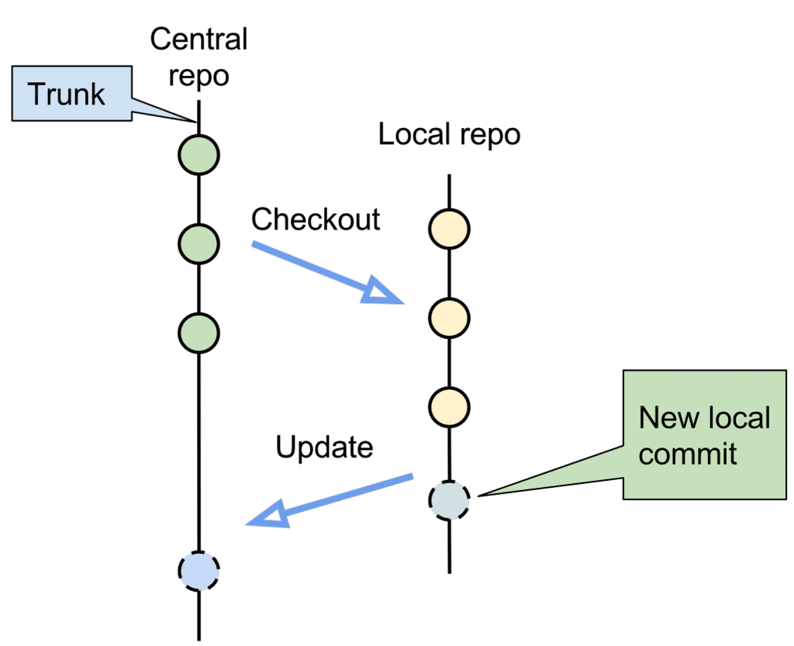
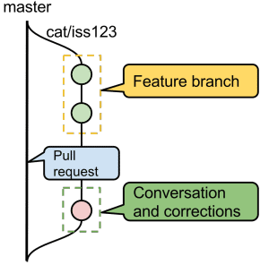
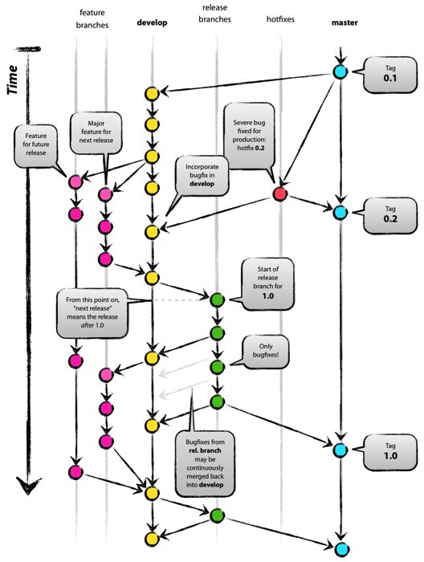
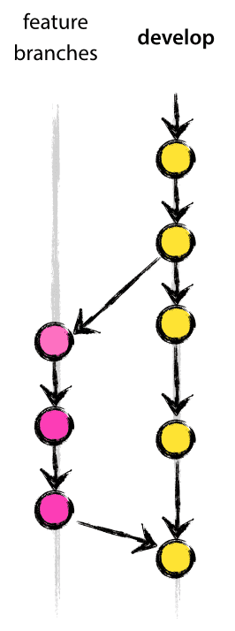
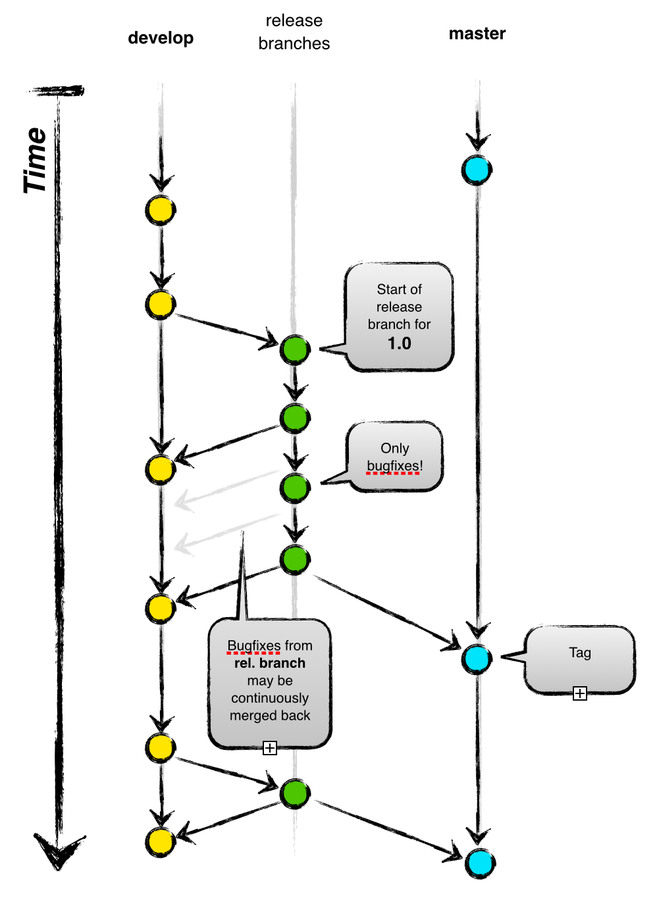
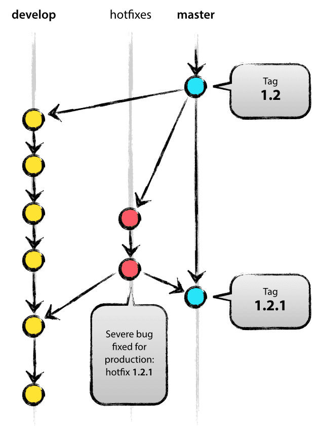
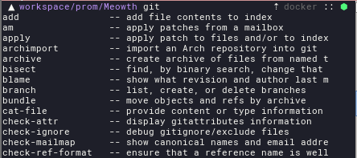

Effective git
Internals
To use tool efficiently you should have at least basic understanding how it works
Who knows where is the repo?
Here it is!
|
Project-specific configuration in Hook scripts in
|
Let do some commiting and see what happens
$ echo "Hello, git" > file.txt
$ git add file.txt
$ tree .git/objects
.git/objects
├── 22
│ └── f46444d223ec55b7677c6dd212b155fe2a7661
├── info
└── pack
3 directories, 1 file And what is that object?
$ git cat-file -t 22f46444d223ec55b7677c6dd212b155fe2a766
blob
$ git cat-file -p 22f46444d223ec55b7677c6dd212b155fe2a766
Hello, git $ git commit -m "initial commit"
[master (root-commit) 6eab0b6] initial commit
1 file changed, 1 insertion(+)
create mode 100644 file.txt$ tree .git/objects
.git/objects
├── 10
│ └── 4e3c6737a206c51479b57a897e4b23e0f273ec
├── 22
│ └── f46444d223ec55b7677c6dd212b155fe2a7661
├── 6e
│ └── ab0b69da5f82aa580f9adb04950b2f0ece81ab
├── info
└── pack
5 directories, 3 files
$ tree .git/refs
.git/refs
├── heads
│ └── master
└── tags
2 directories, 1 fileDiscover new files
$ git cat-file -t 104e3c
tree
$ git cat-file -p 104e3c
100644 blob 22f46444d223ec55b7677c6dd212b155fe2a7661 file.txt
$ git cat-file -t 6eab0b
commit
$ git cat-file -p 6eab0b
tree 104e3c6737a206c51479b57a897e4b23e0f273ec
author Oleksandr Kovalchuk <anxolerd@outlook.com> 1470087710 +0300
committer Oleksandr Kovalchuk <anxolerd@outlook.com> 1470087710 +0300
initial commit
$ cat .git/refs/heads/master
6eab0b69da5f82aa580f9adb04950b2f0ece81ab
Go deeper
$ echo 'version 1' > test.txt
$ git hash-object -w test.txt
83baae61804e65cc73a7201a7252750c76066a30$ echo 'version 2' > test.txt
$ git hash-object -w test.txt
1f7a7a472abf3dd9643fd615f6da379c4acb3e3a git update-index --add --cacheinfo 100644 \
83baae61804e65cc73a7201a7252750c76066a30 test.txt
$ git write-tree
90446980b4e6d9d4972f8529f09512b572b2bbe7
$ git cat-file -p 904469
100644 blob 22f46444d223ec55b7677c6dd212b155fe2a7661 file.txt
100644 blob 83baae61804e65cc73a7201a7252750c76066a30 test.txt Create a commit
$ echo "Commit a tree" | git commit-tree 904469 -p 6eab0b
5121c5edaa0326f94b5a9095f3d8a8e11f85edd3
$ echo 5121c5edaa0326f94b5a9095f3d8a8e11f85edd3 > .git/refs/heads/master
$ git log
commit 5121c5edaa0326f94b5a9095f3d8a8e11f85edd3
Author: Oleksandr Kovalchuk <anxolerd@outlook.com>
Date: Tue Aug 2 01:10:45 2016 +0300
Commit a tree
commit 6eab0b69da5f82aa580f9adb04950b2f0ece81ab
Author: Oleksandr Kovalchuk <anxolerd@outlook.com>
Date: Tue Aug 2 00:41:50 2016 +0300
initial commit Create a new branch
$ echo 5121c5edaa0326f94b5a9095f3d8a8e11f85edd3 > .git/refs/heads/test
$ git branch
* master
testFlow
You can have extremely experienced developers and use modern tools. But the thing is actually a flow! The flow determines the success of the action.
Centralized flow
a.k.a. Hello, VCS
Branch-based flow
a.k.a. GitHub flow
Git Flow
Wait, WTF is that?
GitFlow is convention about:
- branch names
- actions (branch creation and merge)
Main branches

Feature branches
Release branches
Hotfix branches
Git Flow
Now it is not so scary, is it?
Sweeties
Informative git log
Yolog wraps over standard git log and represents commit message history in a compact manner. It provides a visualization of commit graph, and shows refs, tags and unmerged branches altogether.
man git-log instead!
git log --pretty=oneline --abbrev-commit --graph --decorateSubmodules
man git-submodule
Commits recovery
man git-reflog. Use logs to find all changes of HEAD
man git-fsck. Scan git db for dangling objects
Adjust git workflow
#!/bin/bash
# .git/hooks/pre-commit
GIT_ROOT=`git rev-parse --show-toplevel`
if grep --exclude-dir=.git -Fqr 'import pdb' $GIT_ROOT
then
echo "print statement has been found" 1>&2;
echo "please fix the issue and commit again" 1>&2;
grep --exclude-dir=.git -Fnr 'import pdb' $GIT_ROOT
exit 1;
fiFinding bug

man git-bisect. Make git assist you in finding specific commit
Shell help
Modify $PS1 to see repository information
Add completion to your shell
A few more things to remember
Everyone knows about it
From the Queen of England to the Hounds of Hell
© The White Stripes
Some really simple things will help you not to be hated
- Commit often
- Use meaningful commit messages
- Logically finished and consistent commits
- Do not rewrite public changes (unless it is really necessary)